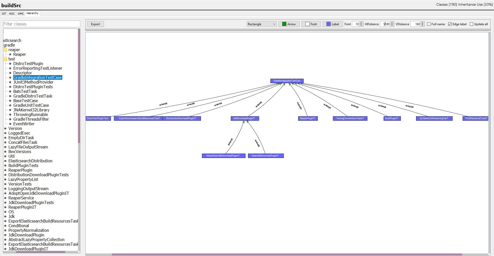
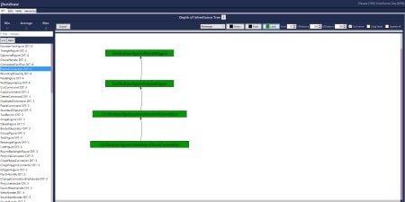
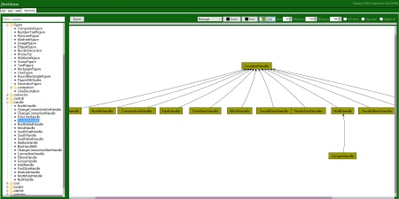
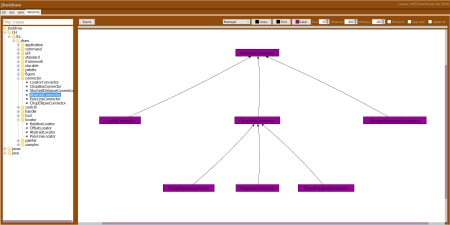
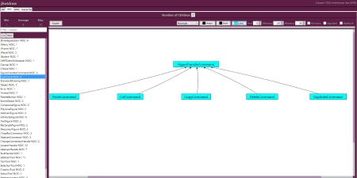

- Analyze a local project, or download one from GitHub.
- Inspects your code to find Depth of Inheritance Tree, Number of Children, Weighted Method Count, and the full inheritance hierarchies of your classes.
- Generate graphs to display information on the hierarchy structures of classes in your code.
- Export graphs or Excel ready sheets containing information gathered from code metrics.
The application is built using a library containing services that are used to parse your code, analyze the project using the code metrics, and finally produce the graphs or Excel sheets. You can find both the full app and the library on GitHub, where you can download the source for either. With the library, you can use the builders and services to further customize the ways you analyze your projects.

DIT

Hierarchy

Hierarchy

NOC